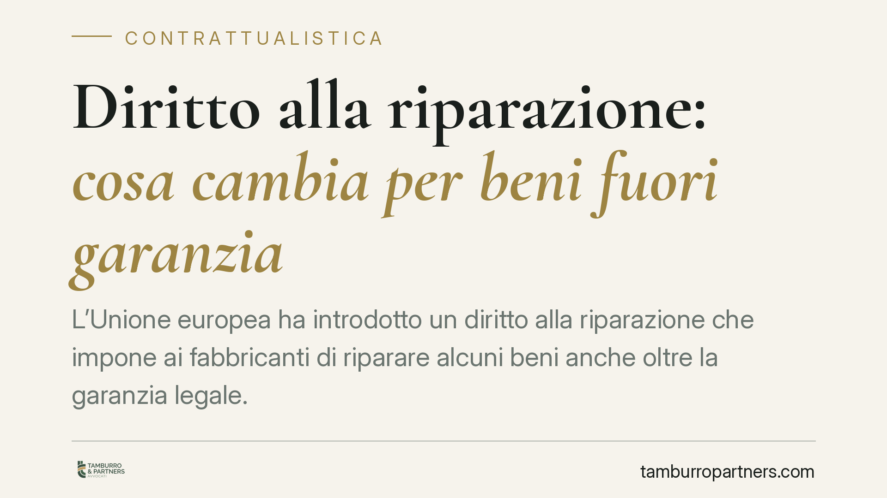

Diritto alla riparazione: cosa cambia per beni fuori garanzia
L'Unione europea ha introdotto un diritto alla riparazione che impone ai fabbricanti di riparare alcuni beni anche oltre la garanzia legale. L'Italia deve recepire la direttiva UE 2024/1799 entro l'autunno 2026. Ne derivano nuovi obblighi lungo la filiera e un diverso equilibrio nei contratti con i consumatori. Vediamo perimetro, esclusioni e adempimenti.

Il contesto
La cosiddetta "riparabilità" dei prodotti è diventata un obiettivo di politica europea. L'idea è semplice: ridurre i rifiuti e allungare la vita dei beni, imponendo ai produttori di renderli riparabili anche quando la garanzia è scaduta.
Il quadro normativo si fonda sulla direttiva (UE) 2024/1799, che gli Stati membri devono recepire nei rispettivi ordinamenti. Il termine di recepimento è indicato dall'articolo 13 della direttiva: salvo diversa indicazione del testo finale, l'applicazione in Italia decorrerà dalla scadenza di tale termine, collocata nell'autunno 2026.
Attenzione, però: il decreto legislativo di recepimento è un atto di prossima emanazione. Numero, data di pubblicazione in Gazzetta Ufficiale e numerazione degli articoli inseriti nel Codice del consumo potranno essere confermati solo con il testo definitivo. Per questo, in attesa della pubblicazione, parliamo genericamente di "decreto di recepimento della direttiva UE 2024/1799".
Inquadramento normativo
La direttiva introduce un obbligo di riparazione a carico del fabbricante per determinate categorie di beni, anche al di fuori della garanzia legale di conformità (oggi disciplinata, nel Codice del consumo, dagli articoli 128 e seguenti). Si tratta quindi di una tutela ulteriore e distinta rispetto alla garanzia: resta ferma la responsabilità del venditore per i difetti di conformità, cui si aggiunge un autonomo diritto a ottenere la riparazione.
Il perimetro dei beni coinvolti non è libero. Esso è ancorato alle categorie di prodotto già soggette a requisiti di riparabilità in base alla normativa europea sull'ecodesign, oggi rifusa nel Regolamento (UE) 2024/1781 (ESPR) e nei relativi regolamenti attuativi di prodotto. In concreto, l'elenco dei beni riparabili è quello richiamato dalla direttiva tramite i regolamenti ecodesign vigenti: il numero e il perimetro delle categorie dipendono quindi da tali fonti e andranno letti alla luce dell'allegato al decreto di recepimento.
Secondo le anticipazioni circolate, alcuni prodotti di largo consumo — tra cui diversi piccoli elettrodomestici, computer portatili e console di gioco — resterebbero fuori dall'elenco. Anche questo dato, tuttavia, va confermato con il testo finale e con l'evoluzione dei regolamenti ecodesign.
Implicazioni pratiche
Per il consumatore cambia la prospettiva: un bene incluso tra le categorie coperte potrà essere riparato dal fabbricante anche dopo la scadenza della garanzia, a condizioni che la normativa mira a rendere trasparenti (tempi, costi, disponibilità dei pezzi di ricambio).
Per la filiera — fabbricanti, importatori, distributori e centri di assistenza — l'impatto è più strutturale. L'obbligo grava anzitutto sul fabbricante, ma la catena distributiva deve organizzarsi per gestire le richieste, informare correttamente l'acquirente e garantire l'accesso alla riparazione.
Qui si apre un tema contrattuale delicato: la ripartizione interna delle responsabilità. Nei rapporti tra produttore, importatore e rete di assistenza, chi sostiene i costi? Chi risponde dei ritardi? Le clausole generiche di esonero o di rinvio "alle norme di legge" rischiano di rivelarsi inefficaci proprio quando servono. Conviene disciplinare in modo espresso oneri, tempi e regresso tra gli operatori.
Cosa fare in concreto
- Verificate il perimetro. Controllate se i vostri prodotti rientrano tra le categorie coperte dai regolamenti ecodesign richiamati dalla direttiva, in attesa dell'allegato al decreto di recepimento.
- Mappate la filiera. Individuate chi, nella catena, sarà operativamente destinatario delle richieste di riparazione e con quali risorse.
- Revisionate i contratti di distribuzione e assistenza. Inserite clausole specifiche su costi, tempi, pezzi di ricambio e regresso, evitando rinvii generici.
- Aggiornate l'informativa al consumatore. Predisponete testi chiari su diritto alla riparazione, distinto dalla garanzia legale.
- Monitorate la Gazzetta Ufficiale. Seguite la pubblicazione del decreto per confermare date, numerazione e perimetro definitivo.
Una riflessione
Il diritto alla riparazione non è solo un adempimento ambientale: ridisegna i rapporti contrattuali lungo tutta la filiera. Chi arriva preparato con contratti chiari e procedure definite riduce il contenzioso e governa i costi. Consigliamo di avviare per tempo la revisione, senza attendere l'entrata in vigore.
Contributo informativo a cura di Tamburro & Partners - Avv. Giuseppe Tamburro. Non costituisce parere legale.
Ogni contratto ha il suo equilibrio.
Se vuoi una revisione delle clausole o una redazione su misura, scrivi allo studio. Ti rispondiamo entro un giorno lavorativo.